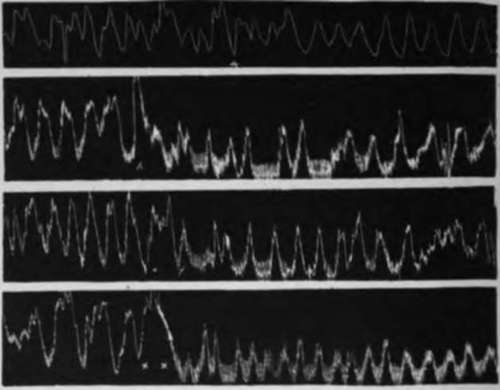

III. Inhibitory Reflexes From The Gastric Mucosa In Dogs And Other Animals. Continued
Description
This section is from the book "The Control Of Hunger In Health And Disease", by Anton Julius Carlson. Also available from Amazon: The Control of Hunger in Health and Disease.
III. Inhibitory Reflexes From The Gastric Mucosa In Dogs And Other Animals. Continued
4. Effect Of Section Of The Vagi Nerves And Of The Vagi And The Splanchnic Nerves
When all the records are compared it appears that section of the vagi nerves alone or section of both the splanchnic and the vagi nerves diminishes the inhibitory reflex from the gastric cavity on the whole more than does the section of the splanchnic nerves alone. | A fact of greater importance, however, is the persistence of the reflex after complete isolation of the stomach from the central nervous system. The inhibition is therefore a primary local reflex. The decrease of the inhibition after the vagi section may involve two mechanisms. It is well known that the vagi contain some efferent inhibitory fibers to the stomach motor mechanism, and these may be, together with the splanchnic inhibitory fibers, involved in the long inhibitory reflex. But since the gastric tonus fibers in the vagi and the gastric inhibitory fibers in the splanchnic nerves are practically antagonistic, it is highly probable that afferent influences leading reflexly to the stimulation of the inhibitory neurones lead at the same time to the inhibition of the tonus or motor neurones.
Fig. 20.-I. Tracings from empty stomachs of dogs. A, normal dog; B, dog . with both splanchnic nerves cut; X, introduction of 25 c.c. 0.5 per cent HCl into the stomach; showing less complete inhibition of the hunger contractions by acid in the stomach after section of the splanchnic nerves. One-third original size.
II. Tracings from the empty stomach of dogs. A, normal dog; Bt dog with section of the vagi and splanchnic nerves; X, introduction of 12 c.c. of brandy-f 12 c.c. of water into the stomach; showing less complete inhibition by alcohol in the case of the stomach isolated from the central nervous system. One-half original size.
The reader may object that we are now discussing interferences that do not necessarily follow from the facts so far at hand. The facts, in brief, are these. The inhibition of the tonus and the contraction of the empty stomach by stimulation of the gastric mucosa persist after isolating the stomach from the central nervous system, but the inhibition is diminished in intensity and duration after section of the splanchnic nerves, and somewhat more so after section of the vagi nerves. It has been shown that section of the vagi leaves the stomach on the whole permanently hypotonic, except during prolonged starvation, although there seems to be a gradual improvement in the efficiency of the local tonus mechanism. Is it not possible that the lessened inhibition after the vagi lesion is due to the depression of the excitability of the local afferent nerve-endings in the mucosa or depression of the local reflex center similar to the tonus depression ? Our experiments do not exclude this possibility, but the results on the dogs with only the splanchnic nerves severed show conclusively that it is no{ the sole factor; for in these dogs there is no gastric hypotonus, and yet the inhibition from the gastric mucosa is diminished.
Another possibility has occurred to us. When the same quantity (25 to 50 c.c.) of acids, alkalies, or alcoholic beverages is introduced into the stomach in tonus and into a stomach in hypotonus, it seems likely that the solution will come in contact with more of the mucous membrane in the tonic than in the atonic stomach. This might result in less inhibition in the case of atonic stomach from the mere fact of stimulation of less of the afferent nervous mechanism. We have tested this possibility by introducing a greater quantity of the respective solutions in the hypotonic stomach. But if 25 c.c. of acid or beer fail to produce complete inhibition, 50 c.c. of the same liquid usually also fail. This is to be noted, however, that the depression of inhibition following splanchnic and vagi section is most marked for a week or two after these nerve lesions are made, and there is a distinct tendency in the efficiency of the local reflex pari passu with the improvement of the local tonus mechanism.
This is probably an instance of readjustment of local reflex mechanisms to a fair degree of efficiency in the absence of central tonus and accessory central long reflexes.
The experiments on man and on normal dogs led to the conclusion that contractions of the empty stomach cannot be induced by the stimulation of the gastric mucosa-that such stimulation causes inhibitiorf only. It was noted that one or two contractions occasionally follow immediately on the introduction of these liquids into the stomach, but it seemed probable that these contractions were due to the mechanical distension of the stomach walls rather than to the chemical or mechanical stimulation of the nerve-endings in the mucosa. These initial contractions following the introduction of acids, alkalies, or alcoholic beverages into the stomach occur more frequently in the hypotonic stomach isolated from the central nervous system. This is true even when special care is taken to introduce the substance slowly so as not to cause sudden distension of the stomach walls. I am not yet satisfied that this primary motor response is actually due to stimulation of nerve-endings in the mucosa. If it is, there must be in the mucosa a few afferent nerve-endings of the excitatory type; but the afferent inhibitory nerve-endings are so much more numerous that the influence of the former group is completely submerged by the latter, except occasionally, when the stomach is hypotonic, or else local afferent nerve-endings in the mucosa are all of one type; but the type of reflex produced by this stimulation may depend in part on the tonus condition of the reflex centers (Auerbach plexus).
The local and long reflex mechanisms governing the tonus and the hunger contractions of the empty stomach demanded by the foregoing work on dogs are diagrammatically represented in Fig. 21. It may be noted that this diagram is not intended to represent all the afferent gastric nerve components, such as those acting in various ways on consciousness, on the vasomotor centers, etc. The adrenal glands are indicated simply as a possible factor, because conclusive data have not yet been obtained on that point.
Rogers found that water, weak alcohol (10 per cent), weak acids (0.2 to 0.4 per cent HCl), sugar solutions, fruit juices, etc., introduced directly into the stomach in rabbits cause temporary inhibition of the hunger contractions, but have no apparent effect on the digestion peristalsis when introduced in the filled stomach. In the guinea-pig Dr. King failed to obtain definite inhibition of the hunger contractions by chemical stimulation of the mucosa. In these experiments it is possible that the stomach was not completely empty, hence the resistance to local chemical stimulation, as Rogers and Hardt found that even in man the tonus rhythm of the fundus that is present during the digestion peristalsis is much more resistant to inhibition from chemical stimulation of the mucosa than is the very same tonus contraction in the empty stomach of the same individual.
Water and weak acids, etc., introduced directly into the empty crop of pigeons cause inhibition of the hunger contractions. In the bullfrog water, weak acids, weak alkalies, etc., inhibit temporarily both the hunger contractions and the digestion peristalsis. In the frog the inhibition from the gastric mucosa is much more marked than that produced by chemical stimulation of the nerve-endings in the mouth (Patterson).
Fig. 21.-Diagram to represent the local and the long reflex mechanisms involved in the inhibition of the gastric tonus and the hunger contractions from stimulation of the gastric mucosa. A, adrenal gland; B, gastric mucosa; C, stomach musculature; D, Auerbach's plexus; E, local afferent neurones from the gastric mucosa to Auerbach's plexus (these neurones are predominantly inhibitory); U, tonus or motor neurones to the stomach via the vagi; L, afferent neurones in the vagi from the gastric mucosa; P, neurones in the splanchnic nerves; + ■ stimulation; - = inhibition.
The inhibitory reflexes from the gastric mucosa to the gastric musculature are thus present in all animals so far studied. The mechanism is probably present in all animals with a well-developed stomach. But the efficiency of the reflexes varies in different species, and in the same species or individuals they vary with the condition of the stomach (filled or empty).
Fig. 22.-a, 10 c.c. of o.15 per cent hydrochloric acid put into the rabbit's stomach during normal digestion peristalsis; b, 10 c.c. of 0.15 per cent hydrochloric acid put into the stomach of a hungry rabbit; c, 10 c.c. of water put into the stomach of a hungry rabbit; d, 10 c.c. of 10 per cent alcohol put into the stomach of a hungry rabbit. Note the inhibitory effect of these solutions on the hunger movements (Rogers).
Continue to:
- prev: III. Inhibitory Reflexes From The Gastric Mucosa In Dogs And Other Animals
- Table of Contents
- next: IV. Inhibitory Reflexes From The Intestinal Mucosa To The Empty Stomach